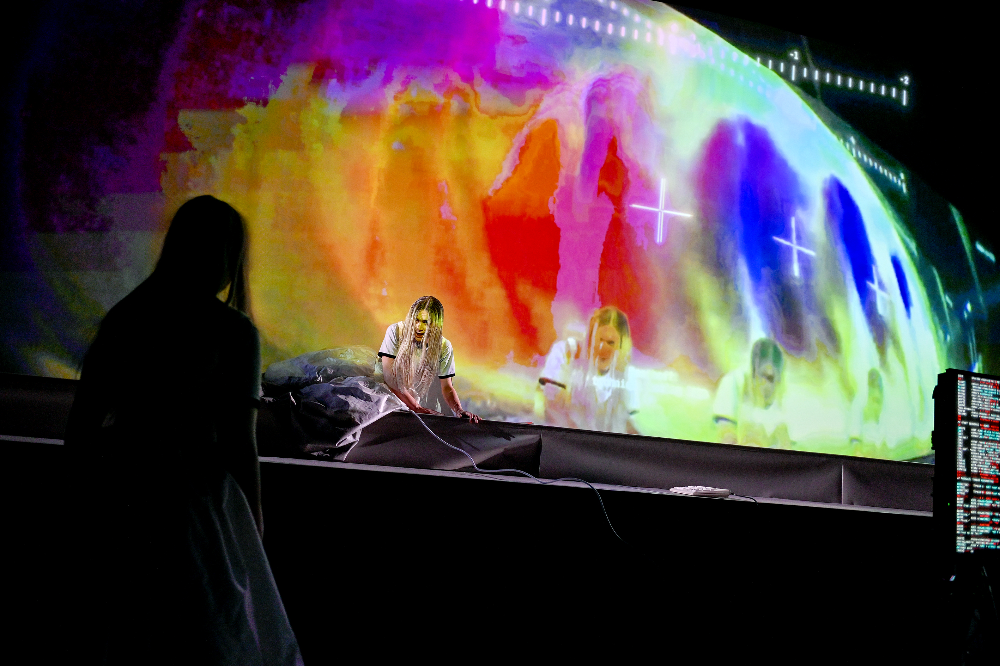
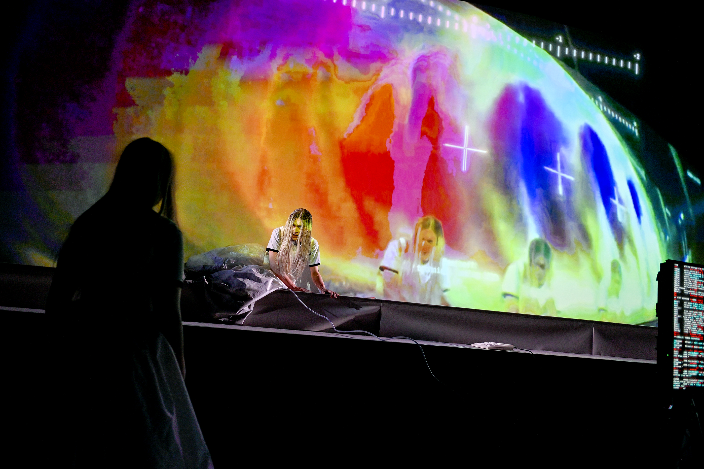
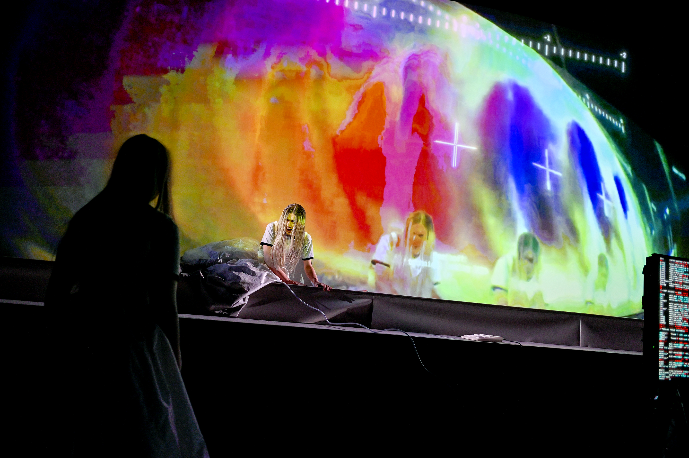

Lars Marcel Braun (1994 in Aachen; raised in Seoul, Oakland, Lexington, and Berlin) is a stage director working across opera, theatre, and visual arts. To finance his studies in physics, musicology, and Slavic literature in Zurich, he worked as an extra at the opera — an experience that exposed him to his first production and sparked his path into directing. After several internships and assistantships, he was appointed staff director at the Komische Oper Berlin from 2014 to 2017, personally selected by Barrie Kosky. Since then, he has worked as a freelance Spielleiter and artistic collaborator at major theatres across Europe. His practice has been shaped by collaborations with mentors including David Alden, Andreas Homoki, Eva-Maria Höckmayr, Jan-Philipp Gloger, Kirill Serebrennikov, Ted Huffmann, and Nanine Linning.
His own artistic projects include a series of immersive installations at Milkshake Festival in Amsterdam, blending nightlife aesthetics with theatrical interventions featuring drag performers. Recent works include acclaimed debuts at Semperoper Dresden and Oper Graz. The upcoming season features a world premiere in Graz during steirischer herbst and his first opera buffa at the Oldenburgisches Staatstheater.
Lars is a fellow of the Akademie Musiktheater heute in the 2024–2026 selection.


 



operetta a capella by oscar strasnoy (2003)
oper graz 2023 set&costumes: victor labarthe d'arnoux
lights: daniel weiss (video upon request)
oper graz 2023 set&costumes: victor labarthe d'arnoux
lights: daniel weiss (video upon request)
*photos copyright werner kmetitsch*
opera in 3 acts
staatstheater darmstadt 2022
regie/set/video: karsten wiegand
regie mitarbeit: lars marcel braun
costumes: alfred mayerhofer / veronika bischoff
choreo: otto pichler
(video upon request)
*photos copyright nils heck*
immersive interdisciplinary installation with drag performers, patrick mason, dancers of ndt, live-cameras
milkshake festival 2019 x pornceptual (westerpark amsterdam)
set: victor labarthe d'arnoux
lights: michiel knoop
vj: zoey vero
interactive installation with drag performers and live-cameras
milkshake festival 2018 x pornceptual (westerpark amsterdam)
set: victor labarthe d'arnoux
lights: marijn hubregtse
vj: zoey vero
world premiere 5.10.25 @ musikprotokoll graz/steirischer herbst
sci-fi oper by leonard evers (2018)
semperoper dresden 2025
video: janic bebi
set: victor labarthe d'arnoux
costumes: selina tholl
dramaturgy: martin lühr
lights: marco dietzel
conducted by chloé dufresne
w/ sofia savenko, dominika škrabalova, jongwoo hong, johannes wieners, ks andreas scheibner, komparserie der semperoper

premiere 18.4.26 @ oldenburgisches staatstheater
TBA (premiere 5.12.25)
premiere 20.6.26 @ oper köln (co-regie)